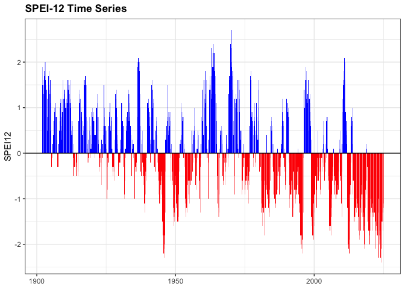
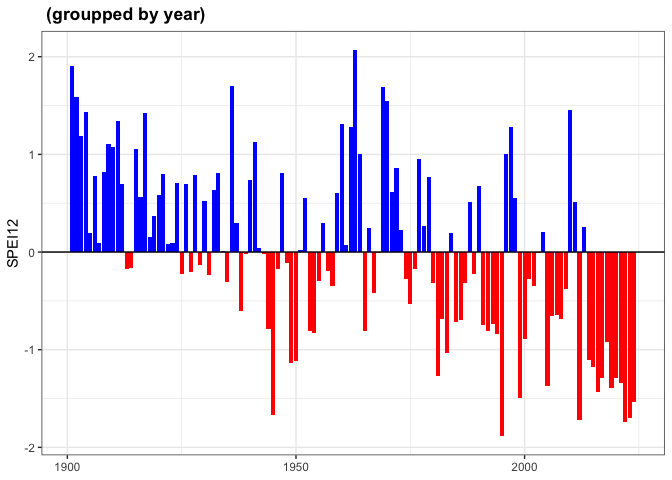
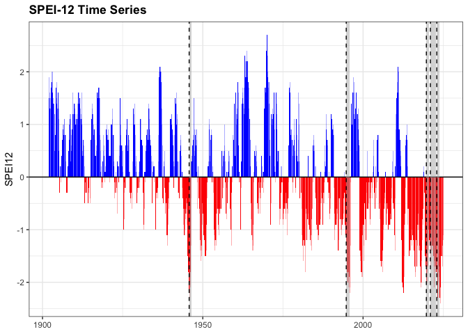

Overview
droughtevents provides tools to detect, summarize, and visualize drought events from drought-related index time series (e.g., SPEI, SPI). Given a time series and a threshold, the package identifies periods of sustained below-threshold values, computes summary statistics for each event (duration, intensity, severity, timing), and offers ggplot2-based plotting functions to visualize the time series and highlight the detected events.
Installation
You can install the development version of droughtevents from GitHub with:
# install.packages("remotes")
remotes::install_github("ajpelu/droughtevents")Usage
Detect drought events
droughts() identifies drought events in a time series when a given index falls below a specified threshold for at least min_duration consecutive months (2 by default).
data(spei_granada)
result <- droughts(spei_granada, vname = "spei12", threshold = -1.28)
result$drought_assessment
#> # A tibble: 17 × 9
#> index_events d_duration d_intensity d_severity lowest_spei month_peak minyear
#> <int> <dbl> <dbl> <dbl> <dbl> <dbl> <dbl>
#> 1 3 11 -1.93 21.2 -2.3 10 1945
#> 2 5 4 -1.45 5.8 -1.6 5 1949
#> 3 7 2 -1.45 2.9 -1.5 12 1950
#> 4 11 2 -1.35 2.7 -1.4 6 1965
#> 5 21 14 -1.83 25.6 -2.2 10 1994
#> 6 23 9 -1.63 14.7 -1.9 6 1998
#> 7 27 7 -1.64 11.5 -1.7 7 2005
#> 8 29 9 -1.92 17.3 -2.2 8 2012
#> 9 31 5 -1.38 6.9 -1.5 5 2014
#> 10 33 5 -1.64 8.2 -1.9 3 2015
#> 11 35 3 -1.5 4.5 -1.7 10 2016
#> 12 37 11 -1.6 17.6 -2.1 12 2017
#> 13 39 11 -1.7 18.7 -2 10 2019
#> 14 41 2 -1.5 3 -1.7 12 2020
#> 15 43 21 -1.58 33.2 -2.1 1 2021
#> 16 45 12 -1.91 22.9 -2.4 1 2023
#> 17 47 5 -1.54 7.7 -1.7 9 2024
#> # ℹ 2 more variables: maxyear <dbl>, rangeDate <chr>The returned object is a named list with three elements:
-
data: the original data, with drought flags and durations added. -
drought_events: only the rows that belong to a detected drought event. -
drought_assessment: one row per event, with its duration, intensity, severity, and timing.
Plot the time series
plot_drought_ts() draws the index as a bar plot, coloring positive (wet, blue) and negative (dry, red) periods differently.
plot_drought_ts(spei_granada, vname = "spei12", title = "SPEI-12 Time Series")
You can also aggregate by year:
plot_drought_ts(spei_granada, vname = "spei12", by_year = TRUE)
Highlight drought events on the plot
add_drought_events() overlays the detected events on top of a plot created with plot_drought_ts(), as shaded bands or vertical lines, or both.
p <- plot_drought_ts(spei_granada, vname = "spei12", title = "SPEI-12 Time Series")
p |>
add_drought_events(
drought_assessment = result$drought_assessment,
which_events = "top",
metric = "severity",
top_n = 5,
type = "both",
show_severity = FALSE
)
Data
The package ships with spei_granada, a monthly SPEI time series (6, 12, 24, and 48-month scales) for Granada, Spain, covering 1901-2024. See ?spei_granada for details and the data source.
References
Vicente-Serrano, S.M., Beguería, S., López-Moreno, J.I. (2010). A Multiscalar Drought Index Sensitive to Global Warming: The Standardized Precipitation Evapotranspiration Index. Journal of Climate, 23(7), 1696-1718. 10.1175/2009JCLI2909.1